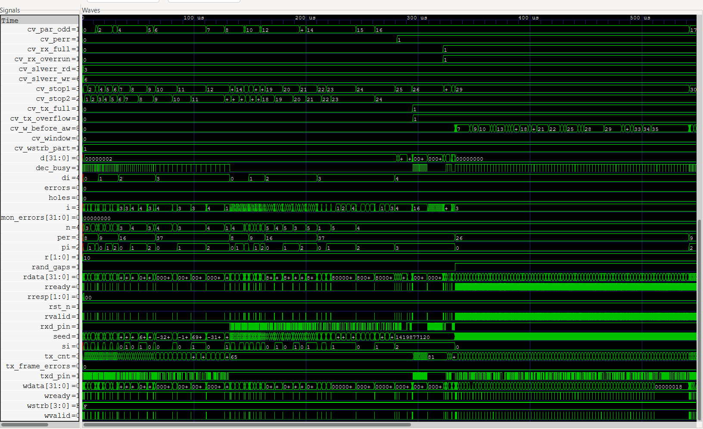
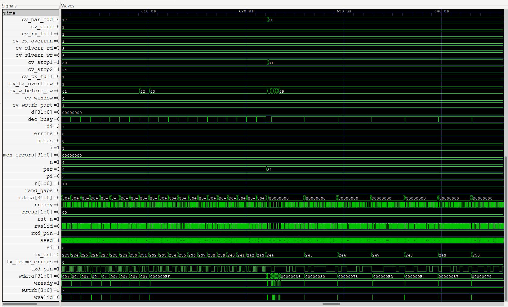
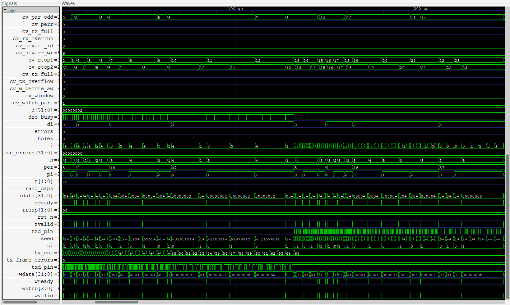

Architecture overview
Select any module to inspect its role. Switch between TX and RX to follow the conceptual data path through the design.
System block diagram
Transmit Receive
AXI-Lite HostExternal bus master that initiates register reads and writes using AXI-Lite channels.
Transmit path
Animated conceptual flow
Waveform captures
GTKWave simulation views

